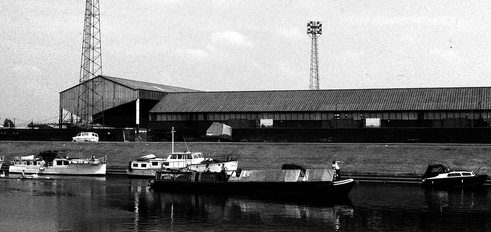
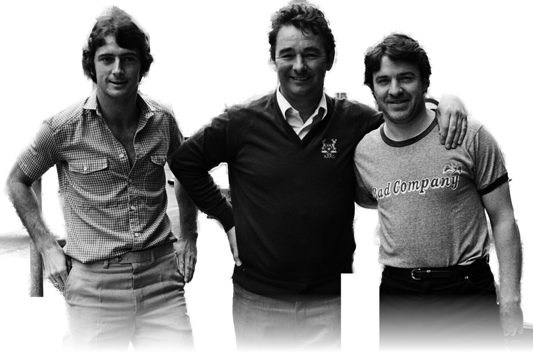
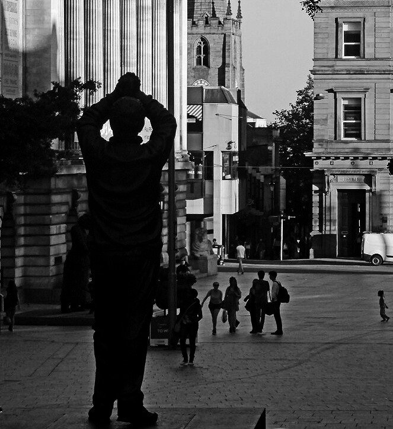

2.ª DIVISIÓN

CITY GROUND, NOTTINGHAM, JUNIO DE 1978 · FOTO: ALAN MURRAY-RUST, CC BY-SA 2.0
LIGA 1977/78RECREACIÓN
1.
FOREST
×2

FRANCIS
ROBERTSON
FRANCIS, CLOUGH Y ROBERTSON · ÁMSTERDAM, 22/04/1980 · FOTO: HANS VAN DIJK / ANEFO, CC0

ESTATUA DE BRIAN CLOUGH, NOTTINGHAM (2015) · FOTO: JOHN SUTTON, CC BY-SA 2.0
PIZARRA · SEMANARECREACIÓN
FOTOS: HANS VAN DIJK / ANEFO (CC0) · ALAN MURRAY-RUST (CC BY-SA 2.0) · JOHN SUTTON (CC BY-SA 2.0),
VÍA WIKIMEDIA COMMONS · COPAS, MARCADORES, ESCALERA Y TABLA: RECREACIÓN